Exploring the Problem Space
To validate the problem, I analyzed 496 user reviews from the Google Play Store and mapped the user experience to identify key friction points
controls issues
sync issues
navigation issues


Validating with Data
Missing speed options and intrusive settings menus that hijacked the viewing context.
Abandoned shows trapped in the watch queue with no intuitive way to manage or clear them.
Critical resume features buried under promotional banners, forcing users to hunt before they could watch.
Defining the Core Problem
Actions are forced into separate layers, breaking context. The experience lacks clarity, responsiveness, and flow, making viewers work just to watch.
Behind the Reviews
Data showed what was broken. Mapping it to real viewing behavior revealed why, and who was suffering most.
The Efficient Viewer
Time-conscious. Demands instant resume access and zero-friction queue management. Every extra tap is a tax on their limited session.
The Comfort Viewer
Long-session watcher. Expects flexible, in-player pacing controls and uninterrupted adjustments. Immersion is everything.
From Problems to Opportunities
How might we allow users seamless experience tuning ?
Speed up fillers, slow down complex scenes, adjust quality and avoid interruptions
How might we make Continue Watching reliable and clutter-free ?
Resume instantly, remove unwanted shows, maintain accurate progress
Turning Insights into Actions
With a clear understanding of the problem, the next step was to explore how these challenges could be solved
Clarity
Deliver the right action at the right moment
Context
Keep users anchored to their content, never pulled away from it.
Control
Hand ownership back to the viewer at every step.
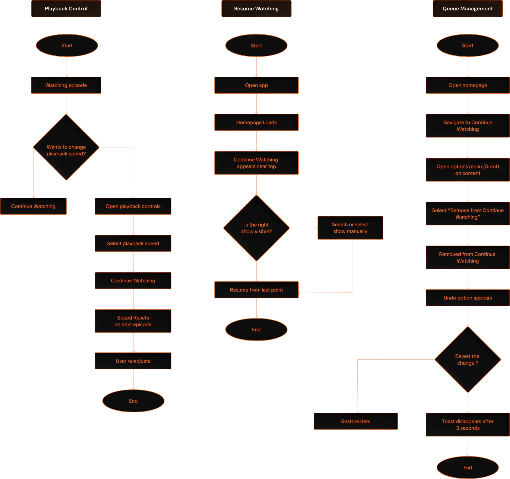
From Wireframe to Interface
Each flow was translated into focused UI Improvements wherever needed the most
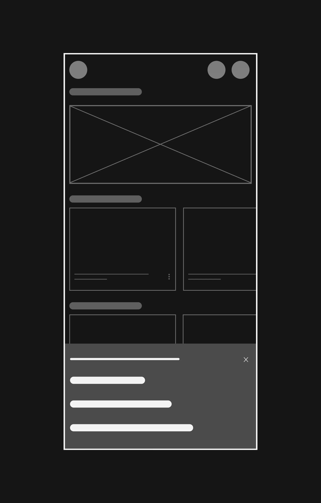
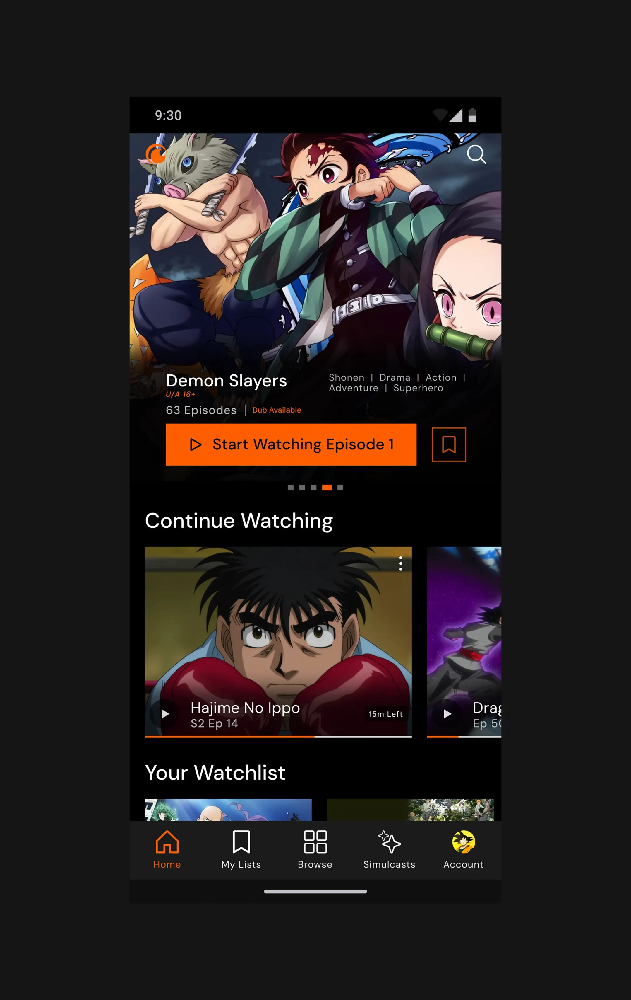
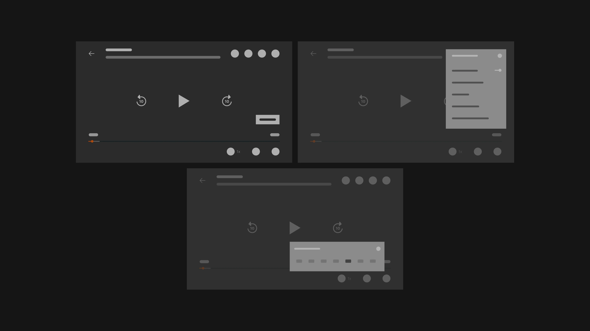
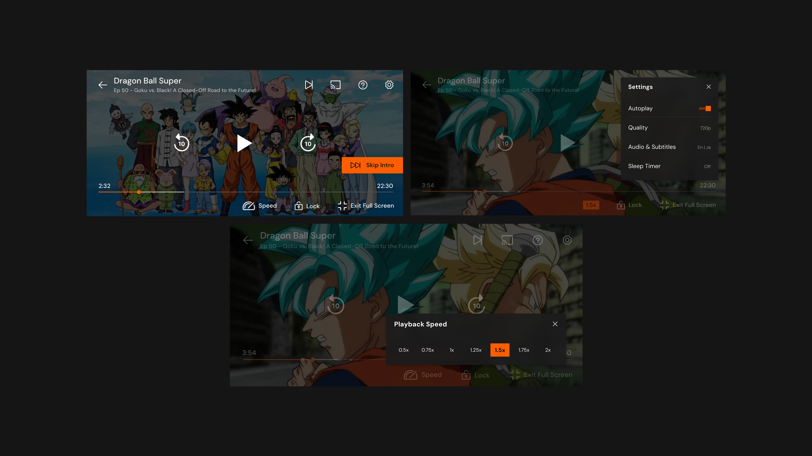
Bringing the Experience to Life
Prototyping key flows to ensure every interaction felt natural, responsive, and earned.
The Redesign
Instant Resumption
Resume content in one tap, directly from the home screen. No more hunting under promotional banners.
Prioritized immediate access over promotional banners. A strategic trade that serves long-term retention over short-term clicks.
Reduced promo visibility trades short-term click metrics for measurable session-start improvement.
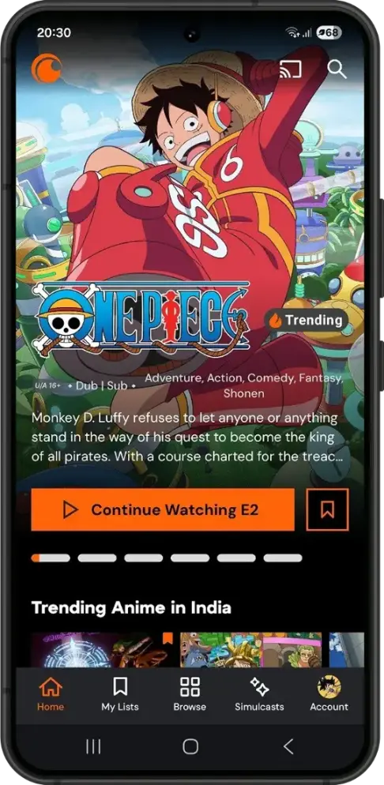
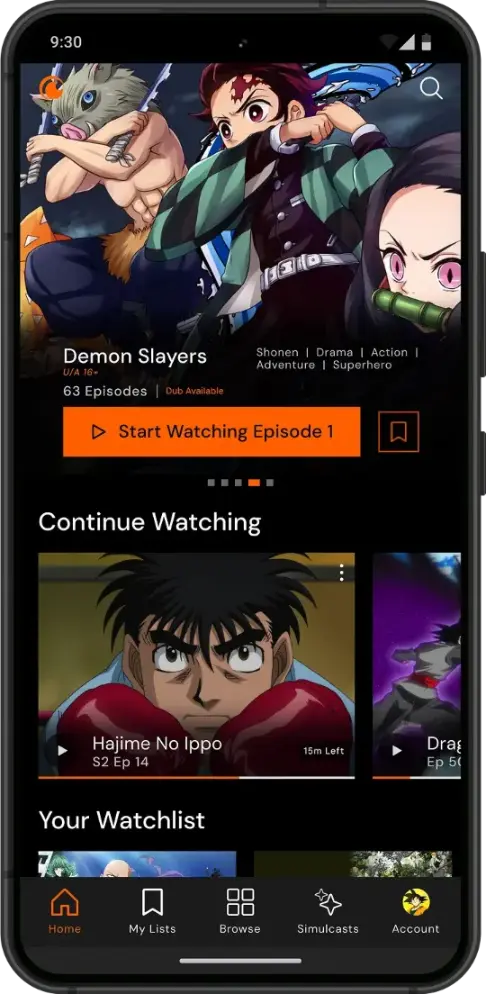
One-Tap Queue Management
Direct contextual menus for instant show removal. Optimistic UI keeps it snappy — actions feel confirmed before the server responds.
Collapsed a multi-step frustration into a single contextual action. Undo support prevents accidental loss without slowing the flow.
Optimistic UI introduces a brief window where an error could silently fail. Mitigated by a visible undo snackbar.
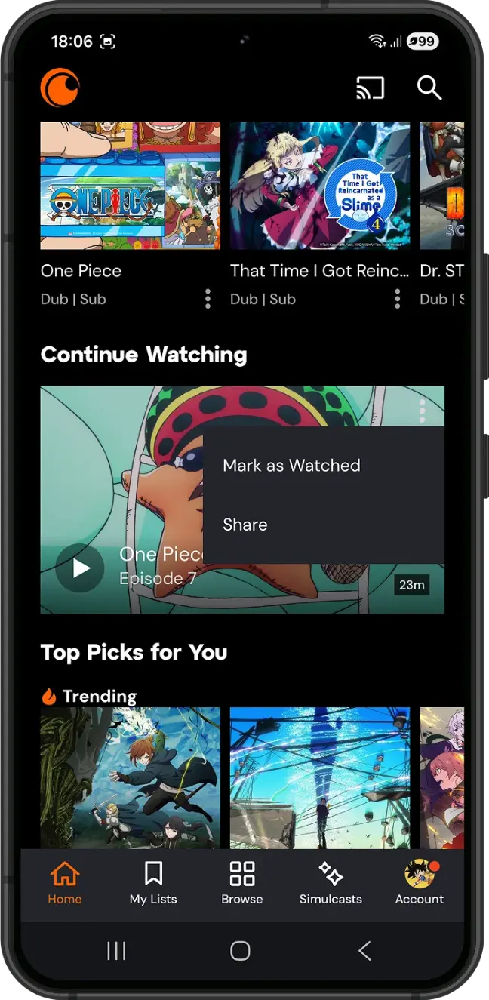
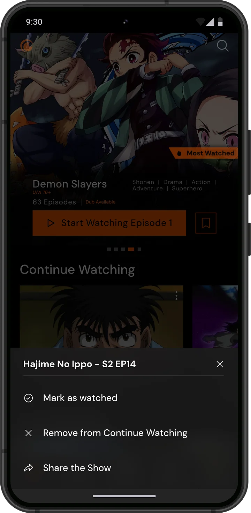
Accessible Playback Speeds
Speed options up to 2x integrated directly into the primary player. Surfaced without needing to pause or dig through settings.
Answered a major user demand for instant pacing adjustments. Dual-location placement (player HUD + settings) serves both viewer types.
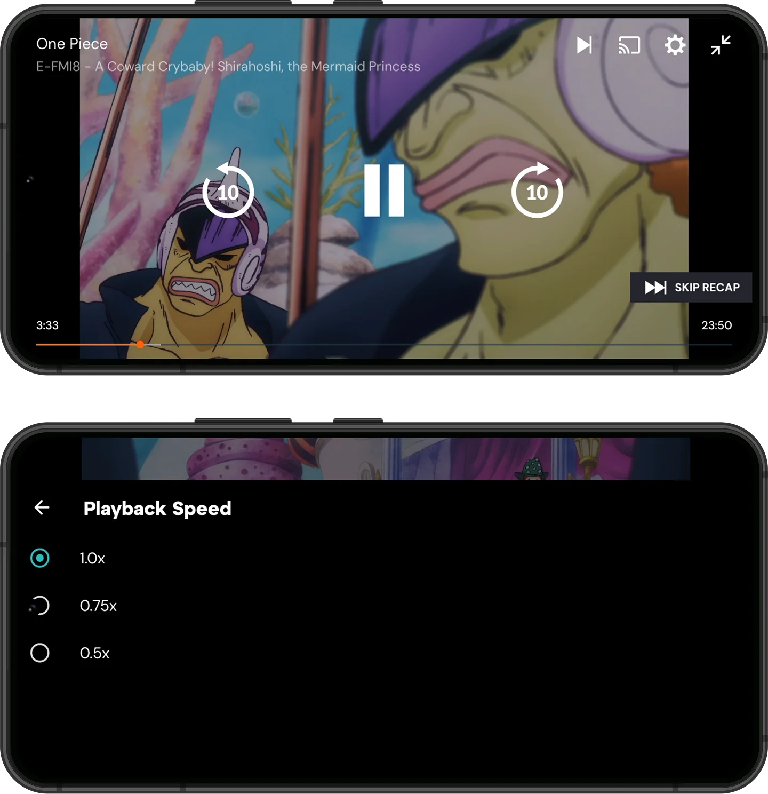
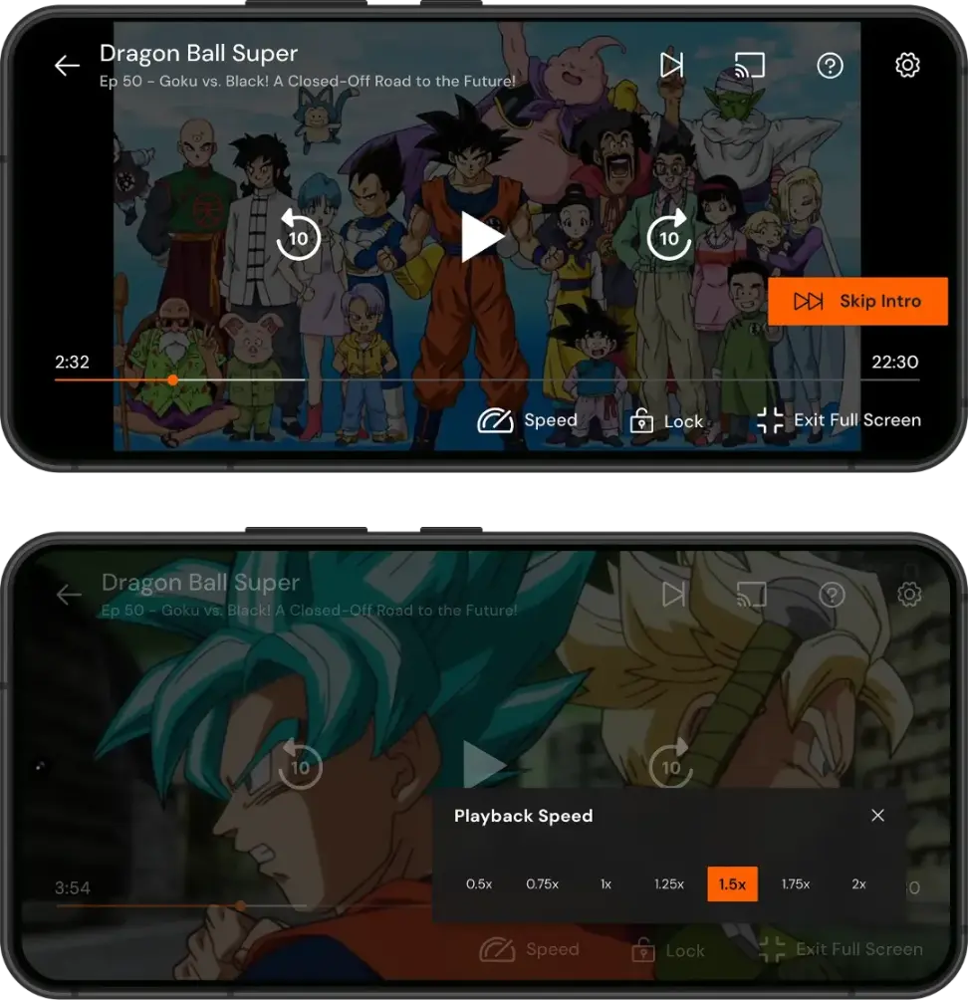
Unobtrusive Settings
A compact side panel replaces the full-screen settings takeover. Visual context preserved while the most-used preferences stay close.
Preserves visual context while surfacing frequently used preferences. The panel anchors to the edge, never a full interruption.
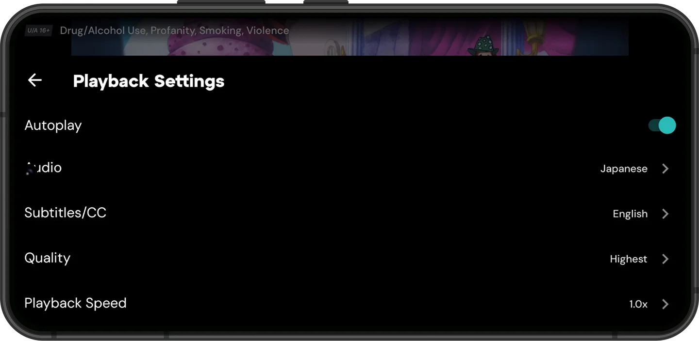
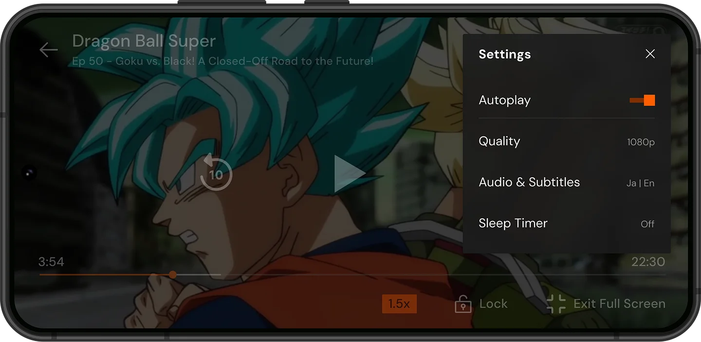
Project Impact
Resumption time. Reduced the time it takes to resume a show from ~9 seconds down to ~3 seconds.
Task success rate. 5/5 users cleared their queue on the first try — up from 0/5 in baseline testing.
Taps required. Playback speed adjustment went from a 4-tap hidden process to a 2-tap seamless interaction.
Key Takeaways
Visual cleanup isn't enough. Elevating "Continue Watching" was a deliberate strategic bet on long-term engagement over short-term promo clicks.
The biggest impact came from small structural fixes — not an overhaul. Knowing where to look matters more than redesigning everything.
Mapping raw review patterns to real human habits — efficiency vs. comfort — is what turned numbers into a design strategy with empathy.

More Projects
Epic Gains | Protothon 2026
Gamifying fitness to beat beginner gym anxiety